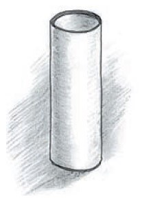
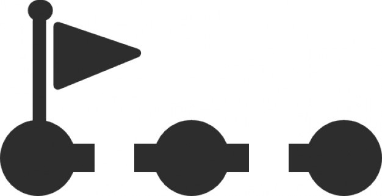

The main entity for service is pipeline

Pipelines have isolated shared context:
Context variables are shared
Network for pipeline is isolated
Pipelines for the project are stored within source code in repository
Pipelines are defined in file

Each step is isolated from others
